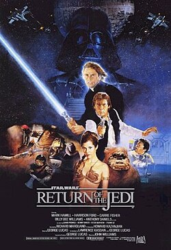

Se passa muitos anos antes da trilogia original e segue o jovem Anakin Skywalker, um escravo com habilidades excepcionais na Força, descoberto pelos Cavaleiros Jedi Qui-Gon Jinn e Obi-Wan Kenobi. Enquanto tentam proteger a Rainha Amidala do planeta Naboo, que está sob ameaça da Federação do Comércio, eles enfrentam o misterioso Lorde Sith Darth Maul. O filme introduz a origem de Anakin, que mais tarde se tornaria o vilão Darth Vader, além de expandir o universo com novas ameaças e intrigas políticas que plantam as sementes para o surgimento do Império.
Ocorre dez anos após os eventos de "A Ameaça Fantasma" e explora o crescente conflito entre a República Galáctica e os separatistas liderados pelo Conde Dooku. O jovem Anakin Skywalker, agora aprendiz de Obi-Wan Kenobi, é designado para proteger a Senadora Padmé Amidala, e os dois desenvolvem um romance proibido. Obi-Wan descobre a existência de um exército secreto de clones, que é mobilizado para lutar pelos Jedi na iminente Guerra dos Clones. O filme explora o início da transformação de Anakin e os eventos que levam à queda da República e ao surgimento do Império.

Acompanha os momentos finais da Guerra dos Clones e a queda da República Galáctica. Anakin Skywalker, atormentado por visões da morte de Padmé e seduzido pelo poder do lado sombrio, é manipulado pelo Chanceler Palpatine, que se revela como o Lorde Sith Darth Sidious. Anakin se torna Darth Vader, ajudando Palpatine a exterminar os Jedi e instaurar o Império Galáctico. Obi-Wan Kenobi, em um duelo devastador, derrota Anakin, que é deixado gravemente ferido, mas sobrevive. O filme marca a transição definitiva de Anakin para Darth Vader e o colapso da Ordem Jedi.

Se passa anos após a queda da República e a ascensão do Império Galáctico. A Princesa Leia é capturada enquanto tenta levar planos secretos da poderosa Estrela da Morte para a Aliança Rebelde. Os planos caem nas mãos de Luke Skywalker, um jovem fazendeiro que, com a ajuda de Obi-Wan Kenobi, Han Solo, Chewbacca, e os droides R2-D2 e C-3PO, parte em uma missão para resgatar Leia e destruir a estação de batalha. Luke começa sua jornada como Jedi, sendo guiado por Obi-Wan e confrontando o vilão Darth Vader, culminando em uma grande vitória rebelde.

Segue os Rebeldes após a destruição da Estrela da Morte, enquanto o Império, liderado por Darth Vader, persegue implacavelmente a Aliança. Luke Skywalker treina com o mestre Yoda no planeta Dagobah para se tornar um Jedi, enquanto Han Solo, Leia, Chewbacca e C-3PO fogem do Império e encontram refúgio na Cidade das Nuvens, governada por Lando Calrissian. Porém, eles são traídos e capturados por Vader, resultando em Han sendo congelado em carbonita. O filme culmina no confronto entre Luke e Vader, com a revelação chocante de que Vader é o pai de Luke, deixando os heróis em desvantagem.

Acompanha os esforços finais da Aliança Rebelde para derrotar o Império Galáctico. Luke Skywalker, agora um Jedi, resgata Han Solo com a ajuda de Leia e seus amigos, e se prepara para enfrentar Darth Vader e o Imperador Palpatine. Enquanto os Rebeldes planejam destruir uma nova Estrela da Morte, construída pelo Império, Luke confronta seu pai, Darth Vader, em uma tentativa de trazê-lo de volta ao lado luminoso da Força. No confronto final, Vader se redime ao matar o Imperador, sacrificando-se para salvar Luke. A Estrela da Morte é destruída, e o Império é derrotado, restaurando a paz à galáxia.

Redes sociais
Youtube | Discord